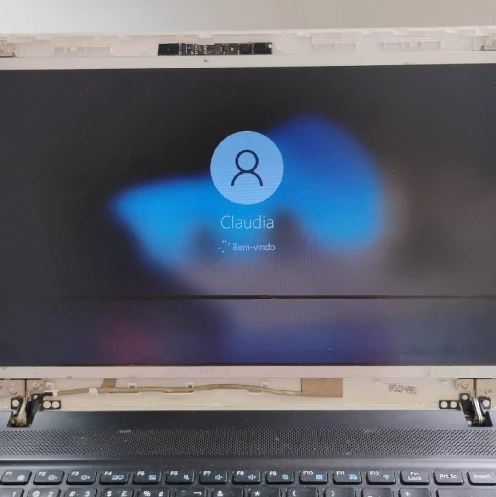

Formatação e otimização
Reinstalação do sistema, remoção de excesso de programas, organização inicial e ajustes para deixar o computador mais leve no uso diário.
A Lutech ajuda quem precisa recuperar desempenho, resolver defeitos e cuidar melhor do notebook ou PC. Atendimento em Juiz de Fora, MG, com manutenção, limpeza, formatação, upgrades e orientações simples para você usar tecnologia com mais segurança.

De travamentos a superaquecimento, a Lutech avalia o equipamento e indica o caminho mais adequado para recuperar desempenho, estabilidade e vida útil.
Reinstalação do sistema, remoção de excesso de programas, organização inicial e ajustes para deixar o computador mais leve no uso diário.
Avaliação de notebook com tela quebrada, falhas de imagem, problemas de inicialização e outros defeitos que atrapalham sua rotina.
Remoção de poeira, cuidado com ventilação e manutenção preventiva para reduzir aquecimento, ruídos e perda de desempenho.
Orientação para trocar HD por SSD, aumentar memória RAM e escolher melhorias que fazem sentido para estudo, trabalho, jogos ou uso profissional.
A proposta da Lutech é cuidar de computadores e notebooks sem complicar a conversa. Você chega com um problema, recebe uma avaliação objetiva e acompanha uma orientação honesta sobre manutenção, limpeza, reparo ou upgrade.
O atendimento combina serviço técnico, orientação clara e conteúdo educativo para que você tome uma decisão com mais confiança.
O problema é explicado em linguagem direta, com indicação do serviço necessário e dos cuidados recomendados depois da manutenção.
A limpeza preventiva, os testes e as orientações de uso ajudam a preservar desempenho e reduzem a chance de falhas por aquecimento ou mau cuidado.
Falar com uma assistência da cidade facilita a avaliação, o acompanhamento do serviço e o suporte quando você precisa de resposta rápida.
O processo é simples para quem só quer voltar a usar o computador sem dor de cabeça.
Conte qual é o problema: lentidão, tela, barulho, aquecimento, erro ou upgrade.
O equipamento passa por uma análise para identificar o serviço mais indicado.
Antes da manutenção, você entende o que precisa ser feito e tira suas dúvidas.
Depois do serviço, você recebe recomendações para manter o desempenho por mais tempo.
No Instagram, a Lutech também funciona como uma página de tecnologia: explica cuidados, mostra bastidores e ajuda você a identificar sinais de que está na hora de fazer uma manutenção.
Uma formatação bem feita, limpeza de sistema ou upgrade para SSD pode transformar a experiência antes de você gastar com outro equipamento.
Quando a imagem falha, pisca ou some, uma avaliação técnica ajuda a descobrir se o problema está na tela, no cabo flat ou em outro componente.
Limpeza interna, boa ventilação e cuidado no transporte ajudam a evitar travamentos, desligamentos repentinos e desgaste prematuro.
Algumas respostas rápidas para quem está pensando em levar o computador para avaliação.
Pode ser excesso de programas, sistema desorganizado, HD antigo, pouca memória, vírus ou aquecimento. A avaliação mostra se vale formatar, limpar ou fazer upgrade.
Faz. Poeira acumulada atrapalha a ventilação, aumenta a temperatura e pode causar perda de desempenho, barulho e desligamentos inesperados.
A Lutech atende em Juiz de Fora, MG. Para combinar avaliação, prazo e disponibilidade, chame pelo WhatsApp ou pelo Instagram @lutechjf.